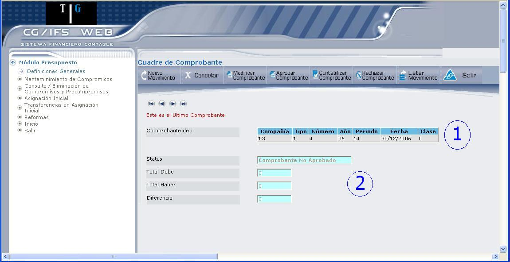

Asignación Inicial
Permite registrar la asignación presupuestaria, es el primer valor que se asigna a la partida presupuestaria, en donde se realiza el traslado implícito o explícito de los recursos de capital del Sector Publico al resto de la economía.
Las asignaciones iniciales del presupuesto tienen diferentes niveles de autorización y son:
- Por el Ministro de Economía y Finanzas.
- Por de Presupuesto del MEF
- Por las autoridades de las instituciones de Gobierno Central
- Por las autoridades del resto de instituciones
El proceso para la asignación inicial se ilustra en 4.34.
Figura 4.34. Asignación Inicial.
- Primero se define si se trata de un ingreso o gasto y se digita el número de modificación.
- Luego se escoge la compañía a la que se va a registrar la partida presupuestaria de Asignación Inicial.
- Después se registra el comprobante. (Un comprobante puede tener varios movimientos y una partida puede tener varios comprobantes).
Todo este proceso se describe a continuación:
Fecha:
Despliega la fecha del sistema, que es la fecha de del Presupuesto. Esta fecha puede ser modificada en base a los requerimientos del usuario.
Tipo Presupuesto:
Seleccione el tipo de presupuesto, dando clic en el botón que despliega la lista de valores. Ingreso o Gasto. En este ejemplo se elegirá la opción Ingreso.
Tipo y Número de Modificación:
Despliega las iniciales de Asignación Inicial (AI), en el campo siguiente debe digitar un número de modificación.
BOTONES


Figura 4.35. Asignación Inicial – Entrada Interactiva.
Los datos que se despliegan en esta pantalla corresponden al encabezado del comprobante.
Compañía:
Seleccione la compañía en la que se van a ingresar, consultar o modificar Comprobantes; presionando el icono , el mismo que despliega la lista de compañías. Escoja la compañía presionando el vínculo Select; el código de dicha compañía y los siguientes campos se cargan automáticamente.
, el mismo que despliega la lista de compañías. Escoja la compañía presionando el vínculo Select; el código de dicha compañía y los siguientes campos se cargan automáticamente.
Es sesión de aprobación:
Esto se define en el Módulo de Contabilidad/ Entrada de Datos/ Entrada Interactiva y permite determinar lo siguiente:
- Si se encuentra marcado el casillero ´Si´ significa que sí se van a aprobar o modificar Comprobantes existentes (No podrán introducirse nuevos Comprobantes)
- Si se encuentra marcado el casillero ´No´ significa que sí se van a introducir nuevos Comprobantes. En este caso, si el usuario está autorizado, puede modificar o aprobar los Comprobantes ya existentes.
Adición de nuevos comprobantes:
Se define en el Módulo de Contabilidad/ Entrada de Datos/ Entrada Interactiva. Y permite determinar si se puede añadir nuevos comprobantes al movimiento, siempre que en el campo “Es sesión de Aprobación” haya escogido la opción “No”.
Año Económico:
Despliega del año contable, los dos últimos dígitos. Por ejemplo:
Año 2006 se despliega 06
Año 2007 se despliega 07
Periodo:
Despliega el periodo contable. Estos periodos se definen en el Módulo de Contabilidad.
Tipo:
Despliega el código del tipo de comprobante. Este comprobante debe estar definido para entrada interactiva y encontrarse con status activo.
Número:
Asigna automáticamente un número de comprobante.
Fecha:
Despliega la fecha en la que se registra la asignación inicial.
Clase:
Clase de Comprobante. Este campo depende de la moneda que use la compañía.
Se despliega 0, si no usa Moneda Extranjera a nivel de Plan de Cuentas.
Se despliega 1, si se introducen todos los importes en Moneda Local.
Se despliega 2, si se introducen todos los importes en Moneda Extranjera. Esta clase de comprobante no admite movimientos IVA.
Se despliega 3, si se introducen todos los importes en ambas monedas. En este caso el usuario es el responsable de cuadrar el comprobante en las dos monedas.
Comentarios:
Permite digitar algún comentario sobre el comprobante.
BOTONES


BOTÓN GRABAR COMPROBANTE
Al grabar el comprobante se despliega la pantalla que muestra 4.36. Para una mejor explicación, la pantalla se ha dividido en dos secciones que corresponden a:

Figura 4.36. Asignación Inicial – Entrada Interactiva – Encabezado del Comprobante.
SECCIÓN 1:
Despliega información referente al encabezado del comprobante, como código de compañía, código del tipo de comprobante, número de comprobante, año económico, periodo contable, Fecha en la que se ingresó el comprobante y clase de comprobante. También presenta unos botones de navegación que permite ir de un comprobante a otro  .
.
SECCIÓN 2:
Esta información se despliega tomando en cuenta el estatus del comprobante y los valores de los movimientos que ingrese en la parte inferior.
Status:
Despliega el estado que tiene el comprobante que se visualiza, dichos estados pueden ser los siguientes: Comprobante no aprobado, Comprobante aprobado, Comprobante Contabilizado, Comprobante Rechazado.
Total Debe: y Total Haber:
Permite verificar que el comprobante cuadre, para esto en la pantalla inicial de Asignación Inicial, debe escoger Ingreso para cuentas del Haber y Gastos para cuentas del Debe.
Diferencia:
Despliega la diferencia que existe entre ambas cuentas, para que el comprobante cuadre debe desplegar el valor cero.
BOTONES


BOTÓN NUEVO MOVIMIENTO
Al describir el ingreso de un nuevo movimiento, solo nos referiremos a la sección 3, de 4.37, ya que las secciones 1 y 2 se explicaron en 4.36.
Figura 4.37. Asignación Inicial – Entrada Interactiva – Ingreso de Movimiento.
Para ingresar un movimiento siga los siguientes pasos:
Partida:
Escoja la partida presupuestaria que va a registrar, presionando el icono, el mismo que despliega una lista de partidas como muestra 4.38.
Figura 4.38. Asignación Inicial – Entrada Interactiva – Ingreso de Movimiento – Escoger Partida.
De clic en el vínculo Select y automáticamente se desplegará la información que muestra 4.39, sección 3.
Cuenta de Auxiliar:
Despliega la cuenta de auxiliar, que en este caso es ASIGNACION INICIAL.
Descripción:
Digite la descripción del movimiento.
Importe:
Digite el importe que se asigna a la partida.
Tipo movimiento:
Determina a que tipo de cuenta pertenece, si es Debe o Haber.
Automáticamente se marca en el casillero correspondiente, en este caso al Haber, ya que se seleccionó como Tipo de Presupuesto “Ingreso”, al seleccionar Gasto, se marcará el casillero Debe.
Figura 4.39. Asignación Inicial – Entrada Interactiva – Ingreso de Movimiento.
Número Documento:
Despliega las iniciales AI (de Asignación Inicial) y el número de documento que se ingresó al empezar esta opción.
Fecha Documento:
Despliega la fecha en la que se registró el documento.
Reservado Usuario: (Opcional)
Se puede utilizar este campo para una clasificación adicional, según los requerimientos del usuario.
Al ingresar los datos que se pide en la sección 3, presione el botón, se desplegará el mensaje “Registro Grabado”. Según vaya ingresando las partidas el valor del importe se agregará tanto a las cuentas del Debe como a las del Haber.
CUADRAR EL COMPROBANTE
Para cuadrar el comprobante debe ingresar la partida de cuadre o la cuenta con la que desea cuadrar el comprobante, como se muestra en el ejemplo de 4.40, sección 2.
Figura 4.40. Asignación Inicial – Entrada Interactiva – Cuadre de Comprobante.
Al ingresar el valor del importe, presione la tecla ENTER, para desplegar el tipo de movimiento y el campo Reservado Usuario. Por último presione la tecla ENTER o el botón SEGUIR, que permite desplegar en la sección 1, los valores del Debe y el Haber, como se muestra en 4.41.
Figura 4.41. Asignación Inicial – Entrada Interactiva – Ingreso de Movimiento.
Los botones de navegación  que se encuentran en la sección 2, permiten ubicarse en la partida que se desee, en donde la información se presenta como muestra 4.42.
que se encuentran en la sección 2, permiten ubicarse en la partida que se desee, en donde la información se presenta como muestra 4.42.

Figura 4.42. Asignación Inicial – Entrada Interactiva – Consulta de Movimiento.
BOTONES
Escoja la partida que desea actualizar, inmediatamente se despliega el código de la partida como se muestra a continuación
Si desea cambiar de partida, debe borrar el código de partida desplegado y dar clic en el icono de ayuda, para desplegar la lista de partidas o digitar el código directamente.
Si no quiere modificar la partida, ubíquese en el código y presione la tecla ENTER, para desplegar la información restante; una vez que haya realizado las modificaciones requeridas presione el botón SEGUIR, caso contrario ubíquese en el último campo y presione la tecla ENTER.
CONSULTAR TODOS LOS MOVIMIENTOS
Para poder observar la lista de movimientos presione el botón LISTAR MOVIMIENTOS que se encuentra en los botones de la parte superior de la pantalla, la lista de movimientos se presenta como muestra 4.43.
Figura 4.43. Asignación Inicial – Entrada Interactiva – Lista de Movimientos de Asignación Inicial.
Para consultar un movimiento determinado de clic en el vínculo Select.
INGRESO DE GASTOS
Si en la pantalla inicial seleccionó como Tipo de Presupuesto = Gasto, siga todo el procedimiento que se explicó para ingreso (Desde 4.35). La única excepción se puede observar en 4.44.
Las diferencias al ingresar una partida de Gasto son las siguientes:
- 1.- Al seleccionar o Cuenta de Mayor (flecha A), se despliega una lista de cuentas de Gastos.
- 2.- Permite el ingreso de cuentas auxiliares, al presionar el icono.
- 3.- En Tipo de Movimiento (sección 3, flecha B) se marca el casillero Debe.
- 4.- Al presionar el botón SEGUIR, se despliega el mensaje: “Registro Grabado” y los valores se ubican en los casilleros correspondientes de la sección 1, Total Debe, Total Haber y Diferencia, como se muestra en 4.45.
Figura 4.44. Asignación Inicial – Entrada Interactiva – Registro de Gastos.
Para cuadrar el comprobante deberá ingresar la partida de cuadre con signo negativo.
Una vez que cuadre el comprobante podrá presionar el botón Aprobar Comprobante para después poder Contabilizarlo.
Figura 4.45. Asignación Inicial – Registro de Gastos – Cuadre de Comprobante.
Created with the Personal Edition of HelpNDoc: Free PDF documentation generator